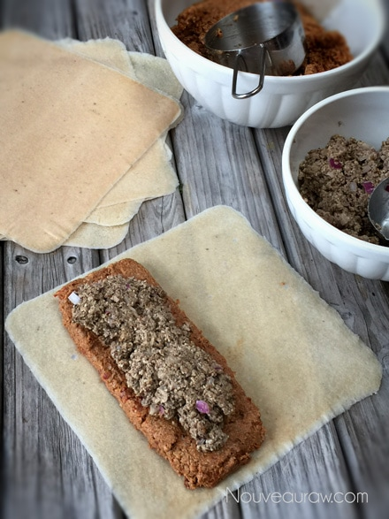
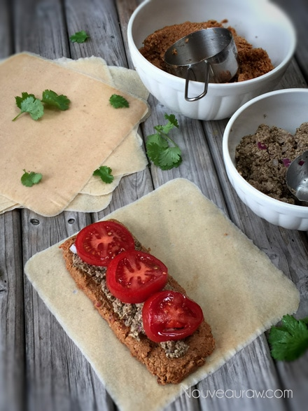
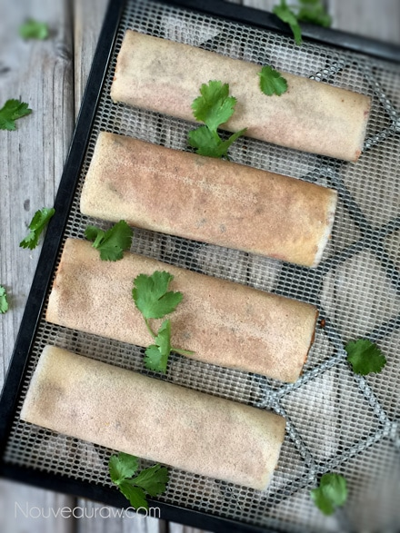
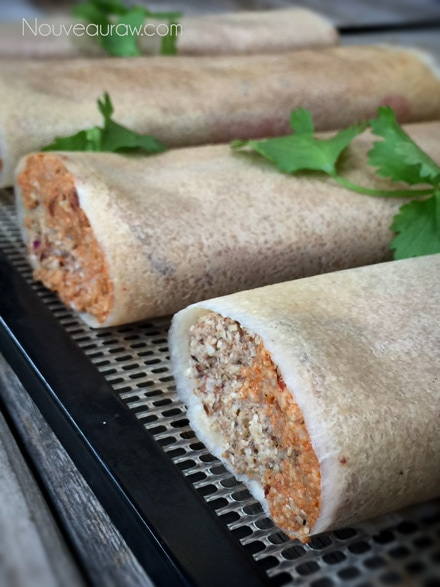
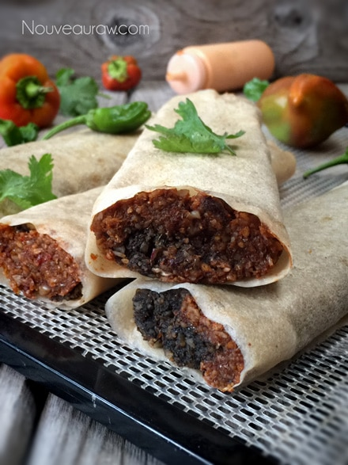

“Refried Bean” and “Beef” Burritos
~ raw, vegan, gluten-free ~
For the love of all things un-fried, bean-less and beef-less… these raw vegan burritos have become the love of my life. Well, culinary-wise… nothing can replace the love I have for my husband… nope not even with the love of a burrito.
Today’s creation was inspired by a cooked version of burritos that I used to eat, you know… back in the day, long long ago, in the past, the years and days that proceed today. I could have called these Sunflower Seed, Walnut, Mushroom Burrito but that doesn’t even begin to describe what they taste like…
Nobody would guess that the “refried beans” are made from sun-dried tomatoes and sunflower seeds. Nor would they wrap their heads around the fact that blended mushrooms, walnuts, and seasoning would make up the “beef” end of things.
Since this is a raw, gluten-free recipe, I used raw coconut wraps instead of the traditional flour wraps. Trust me; you won’t even pick up a hint of coconut as you dig in. There are so many wonderful flavors of chili spice, cumin, garlic, cayenne, etc… that your taste buds will have a hard time computing the fact that you are enjoying a plant-based, uncooked burrito.
To develop the flavors even more so, I dehydrated the burritos. This is optional if you are short on time or don’t own a dehydrator, but I will say that it is well worth it to do the extra step.
Another beauty of these burritos is that they are freeze-able, thus creating an incredible, raw, healthy, kitchen staple that will compliment your hectic lifestyle. Just make sure that you wrap each one individually and then slide them into freezer-safe zip lock bags. They should keep for 1-2 months in the freezer. When you are ready to have one, remove from the freezer and allow it to thaw, unwrapped. If it thaws in the wrapper, condensation builds up a bit making the burrito a little wet on the outside. You can eat it at room temp, warm in the dehydrator or even in the oven if you watch it very carefully.
Garnish with shredded lettuce, raw cheese sauce, guacamole, raw sour cream, and pico de gallo (PEE-coh-deh-GAH-yo). Which is made with finely diced raw tomatoes, onions, lime juice and cilantro. You can really top it with whatever floats your boat. Enjoy and please comment below. I would love to hear if you try this recipe. Blessings, amie sue
P.S. In one of the photos below I show adding fresh tomato slices to the burrito. This tasted amazing once it was dehydrated. It really changed the flavor and texture of the tomato. If you plan on freezing the burritos, I would skip adding the tomato as the process would make it soggy.
yields: 4 burritos
Coconut wraps:
- 2 cups young Thai coconut meat
- 1 1/2 cups coconut water
- 1/4 tsp Himalayan pink salt
- OR use store-bought raw coconut wraps (here)
“Refried beans”:
- 2 cups raw sunflower seeds, soaked
- 1 cup sun-dried tomatoes, soaked
- 1 cup water, soak water, see #2 below
- 2 Tbsp olive oil
- 1 Tbsp paprika
- 1 Tbsp ground cumin
- 1 tsp onion powder
- 1 tsp garlic powder
- 1/2 tsp cayenne powder
- 1/2 tsp Himalayan pink salt
“Beef”:
- 1 cup raw walnuts, soaked
- 1 1/4 cup (104 g) portabello mushrooms
- 1 tsp tamari
- 2 tsp ground cumin
- 2 tsp coriander powder
- 1 tsp garlic powder
- 1 tsp onion powder
- 1/4 tsp chili powder
- 1/8 tsp cayenne powder
- 3 Tbsp diced onion
Preparation:
Coconut wraps:
- You can purchase raw coconut wraps (here) if you are short on time or resources.
- To make homemade wraps: Place the coconut meat, water, and salt in the blender. Blend until creamy smooth; you don’t want it lumpy or gritty.
- Pour the batter onto the non-stick sheet that comes with the dehydrator.
- Spread it evenly across the sheet into one large square.
- You will cut it into quarters after it has dried.
- Dry at 115 degrees (F) for roughly 4 hours or until it is dry enough to peel off.
- Flip over onto the mesh sheet and dry for about 1 hour or until it isn’t tacky to touch.
- Store in a large zip-lock bag, placing parchment paper in between each piece.
“Refried beans”:
- Sunflower seeds – soak in 4 cups of water for 4+ hours. Rinse and drain.
- Sun-dried tomatoes – soak in 2 cups water for 30+ minutes. Drain and keep the soak water to add in later.
- After soaking the sunflower seeds and sun-dried tomatoes, drain them and place in the food processor, fitted with the “S” blade. Process till they start to break down.
- Add 1 cup of soak water, olive oil, paprika, cumin, onion powder, garlic powder, cayenne, and salt. Process until it is almost smooth but with a little texture, much like refried beans.
- If the mixture is too thick, you can add a little bit more water. I didn’t need to.
- Store leftovers in airtight container in the fridge for 3-5 days.
“Beef”:
- Soak, drain and rinse the walnuts. Place in the food processor, fitted with the “S” blade.
- Add the mushrooms, Tamari, cumin, coriander, garlic powder, onion powder, chili powder and cayenne powder. Pulse until crumbly. You don’t want to over-blend, or it will be a paste.
- Tamari is a soy sauce replacement. You can also use either; coconut amino, Braggs amino or Namu Shoyu.
- Hand mix in the fresh diced onions.
- Serve immediately or store excess in the fridge up to 3-5 days.
Assembly:
- Lay a coconut wrap on the countertop, place 1/2 cup of the refried “beans” and 1/3 cup of the “beef” on one end of the wrap.
- Fold the wrap over and roll into a tube.
- Gently flatten, pressing the filling towards the edges.
- Place the burrito on the mesh sheet that comes with the dehydrator.
- Dry at 145 degrees (F) for 1 hour, then reduce to 115 degrees (F) for 3+ hours.
- Check on them throughout the drying process. The goal is to make them warm all the way through, to allow the ingredients time to develop and enrichen and to give it that cooked appearance.
- Enjoy warm!
- Store leftovers in the fridge for 5-7 days. OR wrap in freezer paper, slide into a freezer-safe ziplock bag and freeze for a month.
- For the vegan cheese sauce in the photo, I used my Touchdown Spicy Cheese Dip.
Culinary Explanations:
- Why do I start the dehydrator at 145 degrees (F)? Click (here) to learn the reason behind this.
- When working with fresh ingredients it is important to taste test as you build a recipe. Learn why (here).
- Don’t own a dehydrator? Learn how to use your oven (here). I do however truly believe that it is a worthwhile investment. Click (here) to learn what I use.





© AmieSue.com